JobRivals designing the hiring platform that flips the script
Full product design for an AI-powered hiring platform from discovery through high-fidelity prototype to dev handoff. Instead of candidates applying, employers browse and compete for talent.

Candidate badge profile verified tool proficiencies, progress tracking, and AI-recommended next badges
What if candidates were the product, not the applicants?
Traditional job boards put all the burden on candidates. You apply, wait, get rejected, and never know why. JobRivals flipped this completely: candidates create rich, assessed profiles, and employers browse and compete to hire them like products on a shelf.
I was brought in as the sole designer to take this concept from zero to a fully shipped product experience the candidate onboarding flow, the assessment system, the candidate profile, and the full employer recruiter dashboard.
"We want candidates to feel like action figures in a store. Employers pick them, not the other way around."
The platform serves two distinct user types with very different goals. Candidates want to stand out and get noticed without firing off 100 applications. Employers want to find pre-qualified talent fast, without wading through irrelevant CVs. Designing for both simultaneously with consistent visual language but different interaction models was the central challenge.
Getting in the door.
The first thing a candidate sees is the role selection a single, clear choice that sets the context for everything that follows. The onboarding branches from here: candidates heading into the job-seeker path are taken through a structured assessment before their profile is ever visible to employers.
This was a deliberate product decision. Low-quality profiles hurt employer trust. By making the assessment a prerequisite, we kept the talent pool genuinely useful from day one.
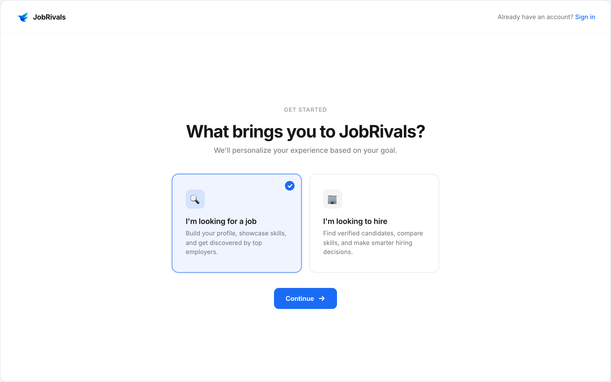
Role selection the first fork: looking to hire, or looking for work
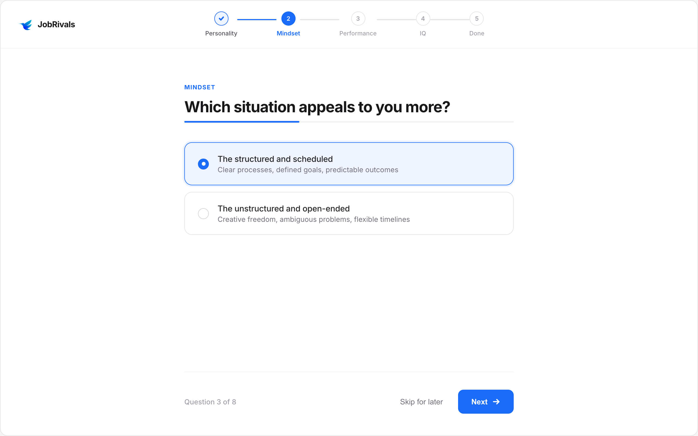
Assessment flow multi-section stepper with progress tracking across 5 dimensions
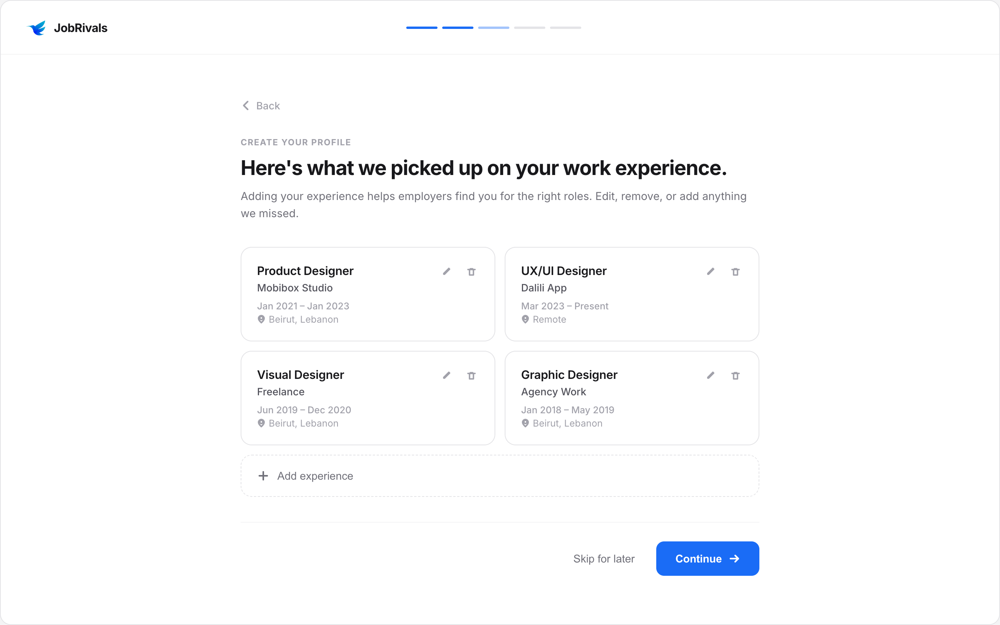
Work experience input card-based timeline with inline add/edit and role verification
The engine behind the match.
The pre-signup assessment was the product's core differentiator. Candidates answer questions across five dimensions Personality, Mindset, Performance, IQ, and Critical Thinking before their profile is ever created. This data feeds the AI matching algorithm and gives employers a compatibility score before they even view a full profile.
The stepper UI was designed to feel like progress, not a test. Each section has a distinct label, a clear "done" state, and saves automatically. The candidate never loses work, and the employer always gets complete signal.
Designing for honesty
One of the hardest UX problems here was incentivizing honest answers. If candidates know they're being scored, they'll game it. The copy and framing were carefully written to position the assessment as "helping the AI find the right role for you" rather than "proving yourself to employers." That shift in framing was the key.
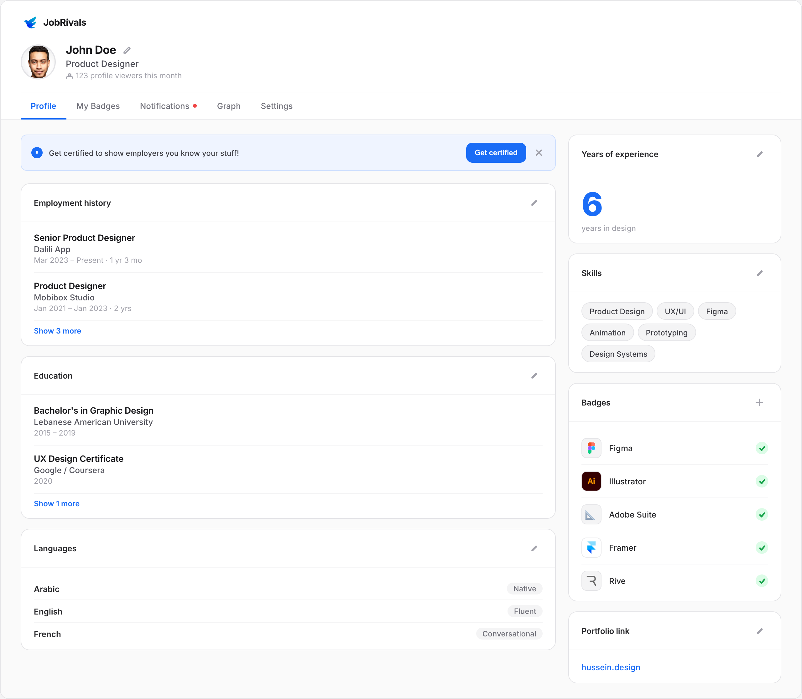
Candidate profile sidebar nav with work history, skills, and badge collection in a single view
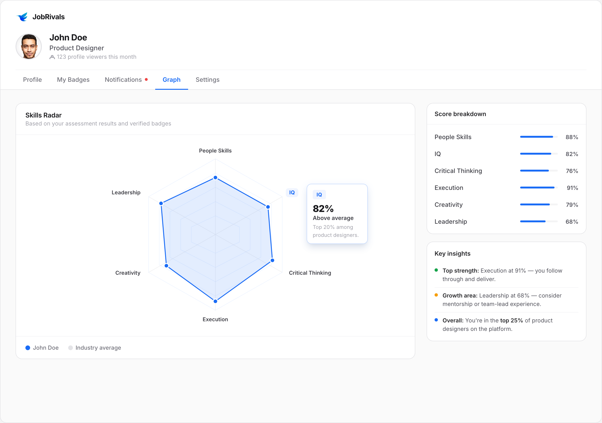
Skills radar assessment results visualized across 6 dimensions with hover tooltips
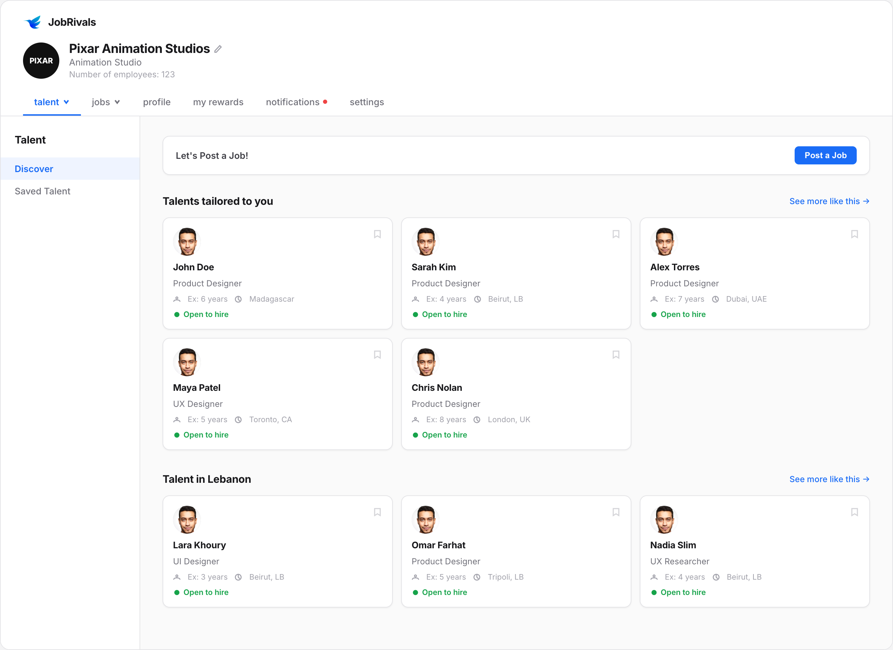
Employer talent discovery dashboard AI-matched candidates surfaced by role, location, and availability
Verified skills, not just claimed ones.
Any candidate can write "Figma expert" on a CV. JobRivals badges are different they're earned through in-platform assessments tied to specific tools and verified against real usage patterns. Employers can filter by badge, and candidates with more verified badges appear higher in discovery.
The badge UI was designed to feel like something worth earning. The progress bar toward Elite status, the trophy icon, the "5 verified · 2 in progress" state all of it was intentional gamification nudging candidates to complete more assessments without feeling coercive.
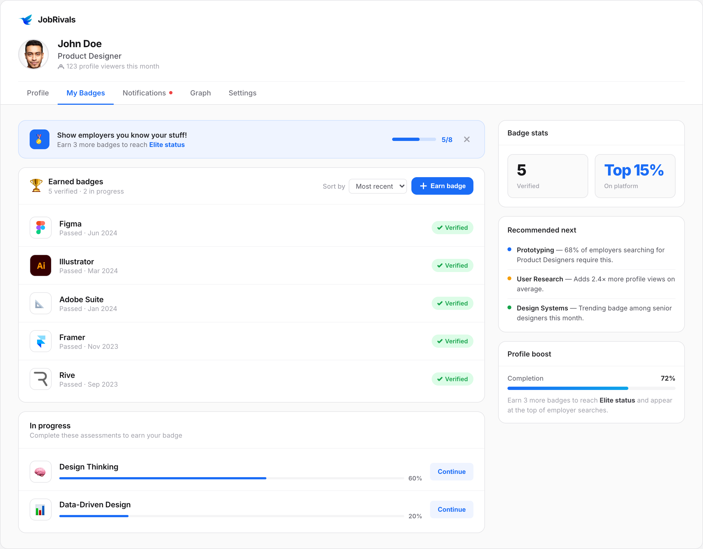
Badge system verified tool proficiencies with progress tracking toward Elite status
Hiring without the noise.
The employer side was designed around one principle: reduce friction to the moment of "this person is right." Employers should be able to go from landing on the platform to inviting a candidate in as few steps as possible, with enough signal at each step to feel confident.
The dashboard is their base of operations. The first time they land, it's an empty state with a clear call to action. Once they post a job, the platform starts surfacing matched talent automatically.
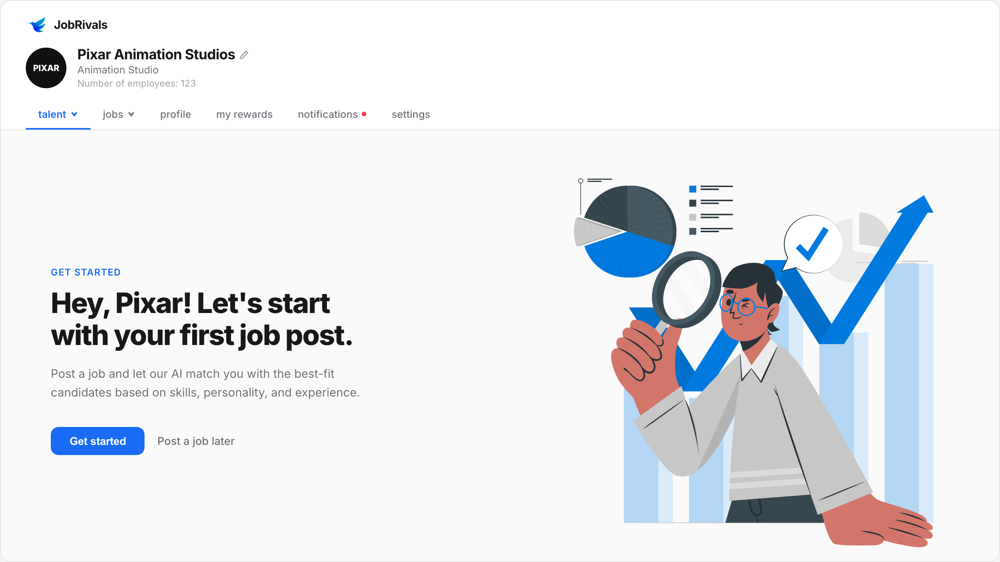
Employer dashboard (empty state) clear first-action prompt with company profile header and nav
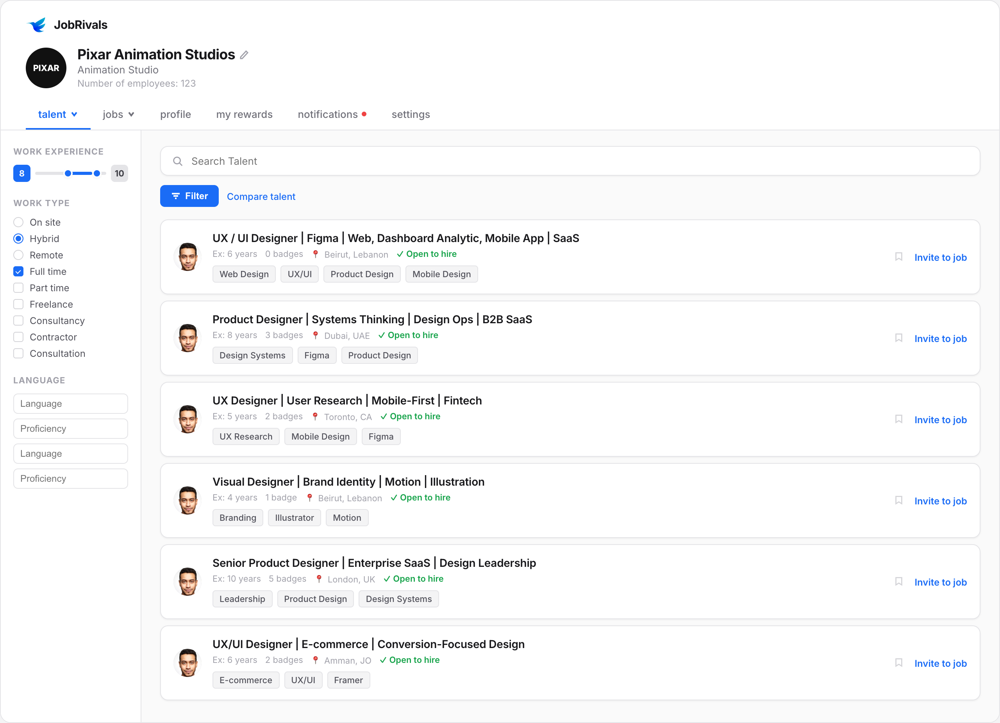
Talent search sidebar filters (experience range, work type, language) with ranked candidate rows
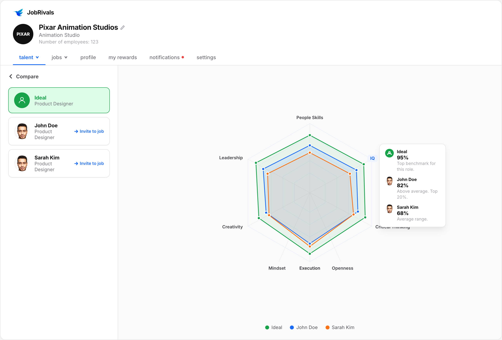
Compare talent multi-overlay radar chart with Ideal benchmark and per-candidate scores
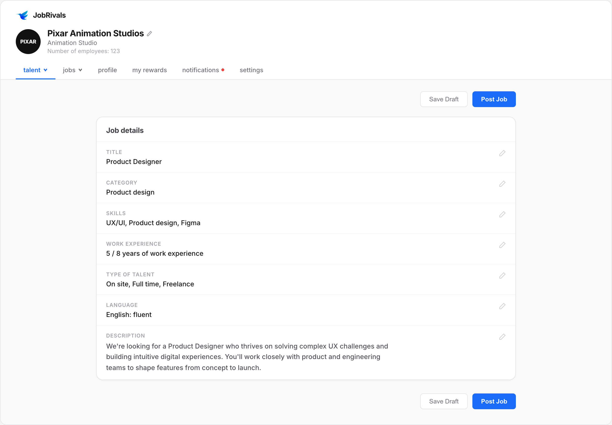
Job post review full summary of all inputs before publishing, with inline edit access
Side-by-side, not gut feel.
One of the most requested features from early employer testing: the ability to compare candidates head-to-head. The compare view overlays multiple radar charts on a single graph, with each candidate in a distinct color. Hover over any axis label and a tooltip breaks down each candidate's score for that dimension.
The "Ideal" benchmark is generated from the job post criteria employers can see at a glance who comes closest to their stated requirements, not just who looks good in isolation.
Compare talent multi-overlay radar chart with Ideal benchmark, per-candidate scores, and IQ hover tooltip
Shipped and measured.
The product launched after 11 months of solo design work. The pre-signup assessment flow reduced low-quality profiles significantly and improved employer satisfaction with browse quality. The badge system became a retention driver candidates kept returning to earn more badges and improve their ranking.
The compare feature was built directly from employer feedback gathered during early access. It became one of the most-used features in the recruiter dashboard within the first month.
What I'd do differently.
The assessment flow is powerful but long 30 to 45 minutes is a significant commitment at the top of the funnel. In hindsight, I'd explore a progressive disclosure model: get candidates in with a 5-minute starter assessment, then unlock the full assessment as they engage with the platform. This would reduce drop-off without sacrificing data quality.
The employer onboarding was also simpler than it should have been. The job post flow works, but it doesn't teach employers how to write a job post that attracts the right candidates. There's an opportunity for AI-assisted job post optimization that would make the matching engine significantly more accurate.